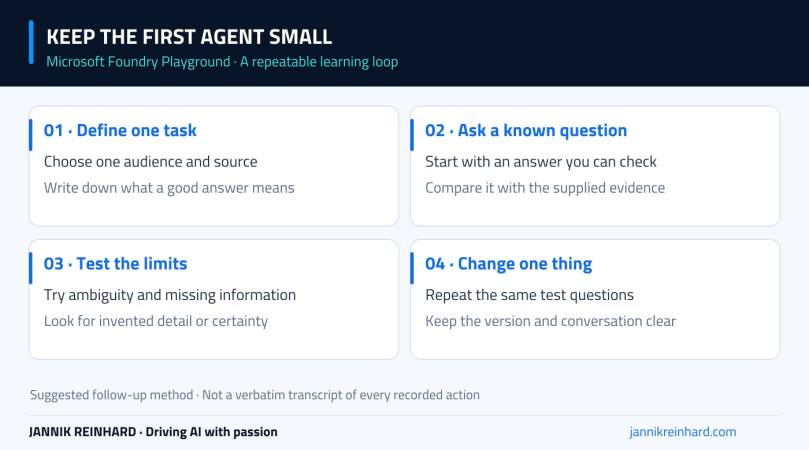
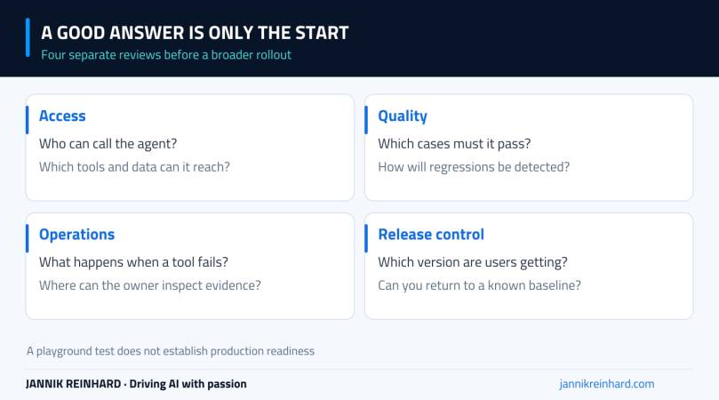

The Microsoft Foundry Playground is a useful place to build your first AI agent because you can see the instructions, send a question and inspect the answer without building a complete application first. The important part is choosing a small task that you can judge.
This episode introduces that first-agent workflow in the portal. The written companion adds a simple test method: define the task, check a normal answer, then try a question that the agent cannot safely answer from the information it has.
Video language: German · Duration: 14:21. Video originally published 3 August 2026; this written companion was added on 22 September 2026. The examples below are suggested follow-up tests, not a claim that every test is demonstrated in the recording.
Before you open the playground
Start with a Foundry project you are allowed to use and a model deployment available to that project. If those pieces are missing, follow my Foundry setup walkthrough and model deployment guide first.
A model generates a response. An agent adds instructions and, where needed, tools around that model. A tool provides a specific capability, such as searching a knowledge source or calling an external service. You do not need to add every capability to understand your first agent.
Use non-sensitive example data in a learning environment. Before adding company documents, review where they will be stored, which identities can access them and what the surrounding logging configuration records. It is easier to keep a first experiment simple than to clean up a collection of unnecessary permissions afterwards.
Give the agent one job
“Help with IT” is too broad for a first test. A narrower example would be: explain one supplied IT policy in plain language and say when the policy does not contain the answer. That gives you something concrete to inspect.
Write down who the answer is for, what source the agent may use and what it should do when information is missing. Keep those instructions short enough that you can read and explain them without another tool.
Here is an illustrative instruction, not an exact transcript of the recorded agent:
Explain the supplied IT policy for an employee. Use only information present in that policy. Keep the answer short. If the policy does not cover the question, say so and suggest contacting the responsible IT team.
That instruction is a behavioral request, not an access-control boundary. If you later connect a tool, its permissions still need to be limited outside the prompt.

A small repeatable loop for the first agent, before adding application complexity.
Test the ordinary question first
Start with a question whose answer you already know. For the policy example, that could be a question answered explicitly in the supplied text. Compare the response with the source instead of judging only whether it sounds confident.
Does the answer preserve conditions and exceptions? Does it turn a recommendation into a mandatory rule? Does it invent a contact person, deadline or approval step? Small additions can change the meaning of a policy even when the rest of the answer looks correct.
Keep the original question and answer. When you change the instructions later, rerun the same question. Otherwise you have no stable comparison and can end up improving the latest example while losing behavior that previously worked.
Add two questions that expose the limits
A first test set does not have to be large. I would add an ambiguous question and a question that the source does not answer. These often reveal more about the agent than another friendly example.
| Test | Example | What a useful response does |
|---|---|---|
| Normal | Ask about a rule explicitly present in the supplied policy. | Explains that rule without adding unsupported details. |
| Ambiguous | Ask whether an unspecified device is allowed. | Requests the missing context or states the limitation. |
| Unsupported | Ask about a benefit that the policy never mentions. | Admits that the source does not provide the answer. |
The goal is not to trick the model for entertainment. It is to find out how the agent behaves when ordinary users ask incomplete questions or assume the assistant knows more than it does.
Change one thing at a time
If the answer is too long, adjust the response instructions and repeat the same tests. If the right information is missing, decide whether the agent needs a suitable knowledge source. If it needs to perform an action, identify the smallest tool capability that can perform it.
Changing the model, instructions and tools together makes it hard to know which change mattered. A small experiment is much easier to learn from when there is one clear difference between two runs.
Also check the conversation context. A follow-up question can inherit information from previous messages. Use a fresh conversation when you want to compare standalone behavior, and a multi-turn conversation when you specifically want to test how context is carried forward.
A playground answer is not production readiness
The playground is an interactive development surface. It does not, by itself, establish how your application authenticates users, restricts data access, handles failures or records evidence. Those responsibilities remain when you move beyond the first test.

A useful first answer is the start of the work, not evidence that these four areas are finished.
Before sharing the agent more widely, I would review who can invoke it, which data and tools it can reach, and what should happen when a dependency is unavailable. I would also keep a small set of repeatable tests and identify the version being tested.
For the next layer of controls, watch the Foundry guardrails episode. For a request that behaves unexpectedly, the tracing and evaluation walkthrough shows how to move beyond judging the final answer alone.
Where to go next
If the first workflow makes sense, move it into code only when you have a reason to automate or integrate it. The Python agent episode separates the model call, agent definition and invocation so each step remains understandable.
Microsoft’s agent quickstart is a useful reference for the current development path. Match the documentation to the API generation and SDK version you are actually using; the portal and code samples evolve.
My main advice is to keep the first agent small. One clear task and three thoughtful test questions teach you more than a long instruction block that nobody can reliably evaluate.
Stay healthy, Cheers Jannik